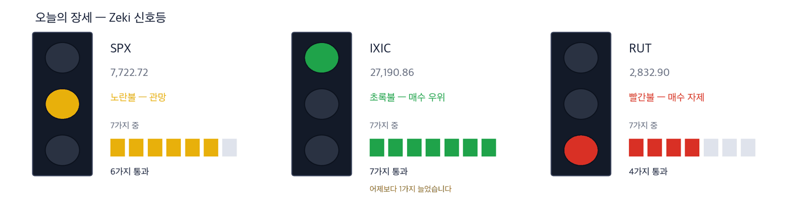

다우 51,177 +0.49% | 나스닥 종합 27,191 +1.19% | S&P 500 7,723 +0.73% | 러셀 2000 2,833 +0.94% | 10년 국채 5.28% | 제키 신호등 노란불 |

초록불은 매수 우위, 노란불은 관망, 빨간불은 매수 자제입니다. 칸은 7가지 조건 중 몇 가지를 만족하는지이고, 많을수록 오르는 종목이 넓게 퍼져 있습니다. 10월 2일 종가로 계산한 신호등이며, 그 뒤로 거래가 없어 바뀌지 않았습니다. 나스닥 종합은 7가지를 모두 만족해 초록불입니다. 10월 1일보다 1가지 늘었습니다. S&P 500은 6가지로 노란불, 러셀 2000은 4가지로 빨간불입니다. 세 지수를 합한 신호등은 노란불입니다.
관망 — 신호등이 뜻하는 자세입니다.
10월 2일 뉴욕에서 나스닥 종합은 1.19% 올라 27,190.86으로 마쳤습니다. 장중에는 사상 최고치를 썼습니다. 한 주로 보면 나스닥은 0.45% 올랐고, S&P 500과 다우는 내렸습니다. (IBD)
지수보다 먼저 볼 것은 금리입니다. 10년물은 한 주 동안 0.10%포인트 가까이 올라 5.28%로 마쳤습니다. 1일 장중에는 5.34%로 22년 만에 가장 높았습니다. (IBD)
주말 사이 새로 나온 소식은 호르무즈 해협입니다. 걸프 산유국의 원유 수출이 전쟁 전 수준으로 거의 돌아온 참에 선박 공격이 다시 늘었습니다. 미국 관리는 이란의 조준이 나아졌다고 말했습니다. 석유수출국기구(OPEC)와 주요 산유국은 11월 생산량을 그대로 두기로 했습니다. (월스트리트저널)
① 월요일에는 10년물 금리가 1일 장중 고점을 넘는지부터 보십시오. 22년 만에 가장 높았던 자리입니다. 금리가 계속 가파르게 오르면 주가가 오래 오르기 어렵다는 분석이 나왔습니다. 10월 2일에도 금리가 다시 오르자 지수가 고점에서 내렸습니다. (IBD)
② 호르무즈 공격 뒤 유조선 운임과 유가가 갈라졌는지 보십시오. 원유 운반선 회사 DHT 홀딩스는 1년 최고가보다 0.2% 아래에서 마쳤습니다. 그런데 원유 선물은 월요일 새벽 1% 내렸습니다. 운임은 위험을 반영하고 유가는 아직 반영하지 않은 셈입니다. (IBD·월스트리트저널)
③ 스페이스X가 금요일 7.35% 올랐습니다. 158.96달러로 마쳐 기준선 158.13달러를 넘었습니다. 지난주에는 돈을 받고 실어 나른 첫 스타십 비행에 성공했습니다. 다만 3개월 제키 자금은 C로 기준에 못 미칩니다. (IBD)
숫자 하나 — 10년물 금리입니다. 한 주 동안 0.10%포인트 가까이 올랐습니다. 미국 소비자는 물가가 올라도 지출을 늘리며 성장을 이끌고 있습니다. 값이 올라 쓰는 돈이 늘었고, 사는 물건도 늘었습니다. 소비가 식지 않으니 금리가 쉽게 내려오지 않습니다. (월스트리트저널·IBD)
| 날짜 | 무엇을 보는가 | 시장에 어떤 영향 |
|---|---|---|
| 10월 5일(월) 개장 | 호르무즈 공격 재개 뒤 첫 거래일 | 유조선 운임과 유가가 같은 쪽으로 가는지 드러납니다 |
| 10월 6일(화) 08:30 ET | 미국 상품·서비스 무역 (8월분) | 나라·품목별 수입을 봅니다. 소비가 강하면 수입도 늘어 있을 것입니다 |
| 10월 7일(수) 14:00 ET | 미국 FOMC 의사록 (9월 15~16일 회의) | 위원들이 금리를 더 올리려 했는지가 드러나 국채금리가 먼저 움직입니다 |
걸프 산유국은 원유 수출을 전쟁 전 수준 가까이 되돌려 놓았습니다. 그런데 해협 주변에서 선박 공격이 다시 늘었습니다. 미국 관리는 이란의 조준이 나아져 해협을 지나는 위험이 커졌다고 말했습니다. (월스트리트저널)
배가 기다리거나 돌아가면 같은 물량을 나르는 데 배가 더 필요합니다. 유가는 한 주 동안 1.4% 내렸지만, 유조선 회사 주가는 그 주에 올랐습니다. (IBD)
| 종가 | 당일 | 한 주 | 20거래일 |
|---|---|---|---|
| 23.68달러 | +0.51% | +8.72% | +17.29% |
| 3개월 | 제키 강도 | 제키 자금 | 고점 대비 |
|---|---|---|---|
| +38.08% | 91 | A | -0.2% |
| 누가 | DHT 홀딩스, 원유를 나르는 초대형 유조선을 빌려주는 회사입니다. |
| 무엇을 | 한 주 동안 8.72% 올라 23.68달러에 마쳤습니다. 1년 최고가 23.72달러에 0.2% 모자랍니다. |
| 언제 | 10월 2일 종가 기준입니다. |
| 어디서 | 뉴욕증권거래소 상장 종목입니다. |
| 왜 | 해협 통과가 위험해지면 배가 기다리거나 돌아가, 운임이 오르기 때문입니다. |
| 어떻게 | 3개월 동안 38.1% 올랐습니다. 10월 2일 거래량은 50일 평균의 0.98배였습니다. |
판단 — 4가지를 모두 넘었습니다. 제키 강도 91, 20거래일 동안 17.3% 올랐습니다. 3개월과 2주 제키 자금이 모두 A입니다.
확인 신호 — 1년 최고가 23.72달러를 넘어 마감하는 것입니다.
철회 기준 — 21일 지수 이동평균 21.92달러 아래로 마감하는 것입니다.
| 종가 | 당일 | 한 주 | 20거래일 |
|---|---|---|---|
| 164.01달러 | +0.12% | +2.13% | +1.11% |
| 3개월 | 제키 강도 | 제키 자금 | 고점 대비 |
|---|---|---|---|
| +20.21% | 78 | A | -7.0% |
| 누가 | 엑손모빌, 미국 최대 석유회사입니다. |
| 무엇을 | 10월 2일 0.12% 올라 164.01달러에 마쳤습니다. 한 주 동안 2.13% 올랐습니다. |
| 언제 | 10월 2일 종가 기준입니다. |
| 어디서 | 뉴욕증권거래소 상장 종목입니다. |
| 왜 | 원유를 주로 해협 밖에서 뽑아, 걸프 수출이 막히면 파는 값이 오르기 때문입니다. |
| 어떻게 | 3개월 동안 20.2% 올랐습니다. 거래량은 50일 평균의 0.80배였고, 1년 최고가보다 7.0% 아래입니다. |
판단 — 4가지 가운데 3가지를 넘었습니다. 다만 제키 강도가 78로 기준(90)에 못 미칩니다. 3개월과 2주 제키 자금은 모두 A입니다.
확인 신호 — 최근 엿새 고가 164.61달러를 넘어 마감하는 것입니다.
철회 기준 — 21일 지수 이동평균 162.22달러 아래로 마감하는 것입니다.
기업이 인공지능 예산을 짜기 어려워졌습니다. 쓰는 양을 토큰 단위로 재는데, 같은 일을 시켜도 모델이 쓰는 토큰이 들쭉날쭉하기 때문입니다. (월스트리트저널)
쓰는 만큼 내는 비용을 미리 알 수 없으면, 무엇을 얼마나 썼는지 재는 도구부터 찾게 됩니다. 소프트웨어 상장지수펀드(IGV)는 한 주 동안 2.3% 올랐습니다. (IBD)
| 종가 | 당일 | 한 주 | 20거래일 |
|---|---|---|---|
| 277.22달러 | +0.27% | +3.39% | +29.08% |
| 3개월 | 제키 강도 | 제키 자금 | 고점 대비 |
|---|---|---|---|
| +8.56% | 92 | B | -5.3% |
| 누가 | 데이터독, 기업의 서버와 앱이 어떻게 돌아가는지 감시하는 소프트웨어 회사입니다. |
| 무엇을 | 20거래일 동안 29.1% 올라 277.22달러에 마쳤습니다. |
| 언제 | 10월 2일에는 0.27% 올랐습니다. |
| 어디서 | 나스닥 상장 종목입니다. |
| 왜 | 인공지능 앱이 무엇을 얼마나 썼는지 재는 도구를 팔기 때문입니다. |
| 어떻게 | 1년 최고가보다 5.3% 아래입니다. 10월 2일 거래량은 50일 평균의 0.49배로 적었습니다. |
판단 — 4가지를 모두 넘었습니다. 제키 강도 92, 20거래일 동안 29.1% 올랐습니다. 3개월 제키 자금은 B, 2주 자금은 A입니다.
확인 신호 — 최근 엿새 고가 282.00달러를 넘어 마감하는 것입니다.
철회 기준 — 21일 지수 이동평균 252.31달러 아래로 마감하는 것입니다.
| 종가 | 당일 | 한 주 | 20거래일 |
|---|---|---|---|
| 59.32달러 | +0.10% | +2.36% | +12.43% |
| 3개월 | 제키 강도 | 제키 자금 | 고점 대비 |
|---|---|---|---|
| +30.32% | 84 | A | -1.5% |
| 누가 | 다이나트레이스, 기업의 소프트웨어가 제대로 도는지 지켜보고 원인을 찾아 주는 회사입니다. |
| 무엇을 | 한 주 동안 2.36% 올라 59.32달러에 마쳤습니다. |
| 언제 | 10월 2일에는 0.10% 올랐습니다. |
| 어디서 | 뉴욕증권거래소 상장 종목입니다. |
| 왜 | 시스템이 복잡해질수록 어디서 비용과 고장이 생기는지 찾는 일이 늘기 때문입니다. |
| 어떻게 | 3개월 동안 30.3% 올랐고, 1년 최고가보다 1.5% 아래입니다. 거래량은 50일 평균의 0.57배였습니다. |
판단 — 4가지 가운데 3가지를 넘었습니다. 다만 제키 강도가 84로 기준(90)에 못 미칩니다. 3개월과 2주 제키 자금은 모두 A입니다.
확인 신호 — 1년 최고가 60.24달러를 넘어 마감하는 것입니다.
철회 기준 — 21일 지수 이동평균 55.92달러 아래로 마감하는 것입니다.
스페이스X는 지난주 돈을 받고 실어 나른 첫 스타십 비행에 성공했습니다. 금요일에는 7.35% 올랐습니다. (IBD)
위성 인터넷 스타링크는 미국 4대 항공사 가운데 3곳이 씁니다. 델타항공만 아마존의 기내 인터넷을 골랐고, 일론 머스크가 이를 공개적으로 비판하고 있습니다. (월스트리트저널)
| 종가 | 당일 | 한 주 | 20거래일 |
|---|---|---|---|
| 158.96달러 | +7.35% | +6.91% | +6.16% |
| 3개월 | 제키 강도 | 제키 자금 | 고점 대비 |
|---|---|---|---|
| -0.91% | 98 | C | -29.6% |
| 누가 | 스페이스X, 로켓 발사와 위성 인터넷 스타링크를 하는 회사입니다. |
| 무엇을 | 10월 2일 7.35% 올라 158.96달러에 마쳤습니다. 기준선 158.13달러를 넘었습니다. |
| 언제 | 10월 2일입니다. |
| 어디서 | 상장 종목입니다. 아크 인베스트 펀드들에서 두 번째로 큰 종목입니다. |
| 왜 | 발사가 돈이 되기 시작하면 위성을 더 싸게 많이 올릴 수 있기 때문입니다. |
| 어떻게 | 거래량이 50일 평균의 1.23배로 늘며 올랐습니다. 1년 최고가보다 29.6% 아래입니다. |
판단 — 4가지 가운데 3가지를 넘었습니다. 제키 강도 98, 20거래일 동안 6.2% 올랐습니다. 다만 3개월 제키 자금이 C로 기준(A~B)에 못 미칩니다. 2주 자금은 B입니다.
확인 신호 — 최근 엿새 고가 159.84달러를 넘어 마감하고, 3개월 제키 자금이 B 이상으로 오르는 것입니다.
철회 기준 — 21일 지수 이동평균 148.75달러 아래로 마감하는 것입니다.
명품 기업 주가가 패스트패션 기업 수준에 거래되고 있다는 분석이 나왔습니다. 지난 20년 동안 명품 회사를 좋은 투자처로 만든 흐름이 약해지고 있다는 것입니다. (월스트리트저널) 미국 명품 기업도 주가가 오르지 않고 있습니다. 랄프 로렌은 제키 강도 47, 태피스트리는 22이고 둘 다 추세 지표(25일과 50일 평균의 차이)가 0 아래입니다. 값이 싸다는 것만으로는 종목으로 다루지 않습니다.
같은 이유로 뺀 것 하나 더 — 파라마운트 스카이댄스입니다. 워너브러더스디스커버리 인수 자금으로 520억 달러어치 채권을 높은 금리에 팔았고, 합친 회사의 빚은 800억 달러에 가깝습니다. (월스트리트저널) 제키 강도는 14이고 20거래일 동안 14.0% 내렸습니다.
| 종목 | ①20거래일 상승 | ②강도 90↑ | ③자금 3개월 A~B | ④2주째 유지 | 충족 | 근거의 무게 |
|---|---|---|---|---|---|---|
| DHT 홀딩스(DHT) | O | O | O | O | 4/4 | 근거 확실 |
| 엑손모빌(XOM) | O | X | O | O | 3/4 | 확인 필요 |
| 데이터독(DDOG) | O | O | O | O | 4/4 | 근거 확실 |
| 다이나트레이스(DT) | O | X | O | O | 3/4 | 확인 필요 |
| 스페이스X(SPCX) | O | O | X | O | 3/4 | 근거 있음 |
네 칸은 ①20거래일 동안 올랐는가 ②제키 강도가 90 이상인가입니다. 이어서 ③3개월 제키 자금이 A 또는 B인가 ④최근 2주에 자금이 약해지지 않았는가입니다. O의 개수가 근거의 무게를 정합니다. 오늘 5종목 가운데 ②를 넘은 곳은 3곳, ③을 넘은 곳은 4곳입니다.
미국에는 외국인·기관이 몇 주를 샀는지 알려 주는 일별 공시가 없습니다. 아래 등급은 오른 날과 내린 날의 거래량을 견줘 되짚은 추정이지 집계가 아닙니다. 10월 2일 종가까지의 자료입니다.
| 종목 | 수급 3개월→2주 | 거래량 | 어떻게 읽나 |
|---|---|---|---|
| 매집 5 — 3개월 A, 2주도 사는 쪽 | |||
| Mattel Inc MAT | A → A = | 3.97배 | 관심✗ — 3개월도 2주도 사는 쪽입니다 |
| Qorvo Inc QRVO | A → B ↓ | 3.23배 | 주의 — 등급이 내리는데 물량이 늘었습니다 |
| CarMax Inc KMX | A → B ↓ | 2.90배 | 주의 — 등급이 내리는데 물량이 늘었습니다 |
| Summit Therapeutics SMMT | A → A = | 2.19배 | 관심✓ — 3개월도 2주도 사는 쪽입니다 |
| Accenture plc ACN | A → A = | 2.10배 | 관심✓ — 3개월도 2주도 사는 쪽입니다 |
| 분산 5 — 3개월 E, 2주도 파는 쪽 | |||
| Corteva Inc CTVA | E → E = | 7.51배 | 주의 — 3개월도 2주도 파는 쪽이고 물량이 늘었습니다 |
| Fair Isaac FICO | E → E = | 6.33배 | 주의 — 3개월도 2주도 파는 쪽이고 물량이 늘었습니다 |
| Nike Inc NKE | E → E = | 2.61배 | 주의 — 3개월도 2주도 파는 쪽이고 물량이 늘었습니다 |
| Annaly Capital Management NLY | E → E = | 2.34배 | 주의 — 3개월도 2주도 파는 쪽이고 물량이 늘었습니다 |
| MGM Resorts International MGM | E → E = | 2.06배 | 주의 — 3개월도 2주도 파는 쪽이고 물량이 늘었습니다 |
거래량은 최근 5거래일 평균 ÷ 50일 평균입니다. 줄마다 거래량이 많은 순서입니다. ✓ 는 저희 진입 규칙(MACD 라인 > 0)도 통과했다는 뜻이고, ✗ 는 수급은 좋지만 규칙 밖이라는 뜻입니다. 이 읽는 법이 맞는지는 지금 세고 있습니다.
수급 등급은 다음 날 사라는 신호가 아닙니다. 저희가 미국 21년치로 재어 보니 등급별 그 뒤 성적이 서로 구별되지 않았습니다. 이 표는 지금 무슨 일이 벌어지는지를 보여 줄 뿐입니다.
기사와 값이 맞아도 자금은 따로 봅니다. 아래 표는 최근 5거래일 거래량이 50일 평균을 넘었는지를 답합니다.
| 종목 | 50일 평균을 넘었나 | 제키 자금 3개월 → 2주 | 어떻게 읽나 |
|---|---|---|---|
| DHT 홀딩스(DHT) | 1.14배 ✓ 넘었습니다 | A → A | 관심 — 3개월도 2주도 사는 쪽입니다 |
| 엑손모빌(XOM) | 0.81배 ✗ 못 넘었습니다 | A → A | 관심 — 3개월도 2주도 사는 쪽입니다 |
| 데이터독(DDOG) | 0.66배 ✗ 못 넘었습니다 | B → A | 확인 — 올랐지만 거래가 얕습니다 |
| 다이나트레이스(DT) | 0.80배 ✗ 못 넘었습니다 | A → A | 관망 — 이어지지만 거래가 말랐습니다 |
| 스페이스X(SPCX) | 0.89배 ✗ 못 넘었습니다 | C → B | 확인 — 올랐지만 거래가 얕습니다 |
칸의 말은 저희의 매매를 뜻하지 않습니다. 관심은 값과 거래가 같은 쪽이라는 뜻입니다. 확인은 등급은 올랐지만 거래가 얕다는 뜻이고, 관망은 흐름은 이어지지만 거래가 말랐다는 뜻입니다.
| 근거의 무게 | 종목 | S&P 500을 이긴 수 | 지수를 웃돈 폭 | 지수를 밑돈 폭 | 전부 평균 |
|---|---|---|---|---|---|
| 근거 확실 | 40 | 26 / 40 | +4.46%p | -3.80%p | +1.57%p |
| 근거 있음 | 17 | 8 / 17 | +2.99%p | -3.67%p | -0.54%p |
| 확인 필요 | 19 | 7 / 19 | +3.56%p | -2.87%p | -0.50%p |
| 근거 없음 | 4 | 0 / 4 | 없음 | -2.42%p | -2.42%p |
| 테마 제외 | 7 | 0 / 7 | 없음 | -3.51%p | -3.51%p |
| 근거 확실 40 | +1.57%p | ||||||
| 근거 있음 17 | −0.54%p | ||||||
| 확인 필요 19 | −0.50%p | ||||||
| 근거 없음 4 | −2.42%p | ||||||
| 테마 제외 7 | −3.51%p |
가운데 선이 S&P 500입니다. 오른쪽이 웃돈 것, 왼쪽이 밑돈 것입니다. 이름 옆 회색 숫자는 그 칸의 종목 수입니다.
근거 확실 40종목 가운데 26종목이 S&P 500을 이겼습니다. 이긴 26종목은 평균 4.5%p 웃돌았고, 진 14종목은 평균 3.8%p 밑돌았습니다. 전부 합치면 지수보다 +1.6%p 입니다.
20거래일(약 한 달) 뒤 결과는 10월 7일에 처음 나오고, 차는 대로 이 자리에 표로 더해집니다.
60거래일(약 3개월) 뒤 결과는 12월 3일에 처음 나오고, 차는 대로 이 자리에 표로 더해집니다.
판정. 두 시장 합쳐 60건이 찬 기간마다 미리 정해 둔 방식으로 판정해 그대로 싣습니다. 5거래일 156건 — 지수보다 낫다고 할 수 없습니다. 다만 근거 등급이 높은 종목이 성적도 좋았습니다. (46.8%가 지수를 이겼습니다) · 20거래일 0건 / 필요 60건 · 60거래일 0건 / 필요 60건
| 언제 | 무엇을 보는가 | 무엇을 뜻하는가 |
|---|---|---|
| 개장 30분(동부 09:30~10:00) | DHT 홀딩스가 1년 최고가 23.72달러 위에서 거래되는가 | 위에 있으면 해협 위험이 운임에 계속 붙는 것입니다. 그 아래로 밀리면 공격 소식이 이미 값에 들어간 것입니다 |
| 장중 | 10년물 금리가 1일 장중 고점 5.34%를 넘는가 | 넘으면 데이터독 같은 성장주가 먼저 내립니다 |
| 마감 30분(동부 15:30~16:00) | S&P 500이 50일 이동평균 7,658 위에서 마치는가 | 지난주 이 선 근처까지 내려갔다가 반등했습니다. 마감에서 내주면 반등이 실패한 것입니다 |
대법원이 새 회기를 열고 기후·총기·종교 사건을 다룹니다. 트럼프 대통령은 중간선거에서 공화당이 이기면 모든 성인에게 5,000달러를 주겠다고 다시 밝혔습니다. 정부 지출이 늘면 금리는 오르는 쪽입니다. 기업 쪽에서는 온세미가 시냅틱스를 주당 123달러, 약 57억 달러에 현금으로 사들이기로 계약을 고쳤습니다. 아마존은 메릴랜드 캘버트 클리프스 원자력발전소의 발전량을 늘리는 일을 돕기로 했습니다. (월스트리트저널)
This is the Rex Way, ZekiRex™